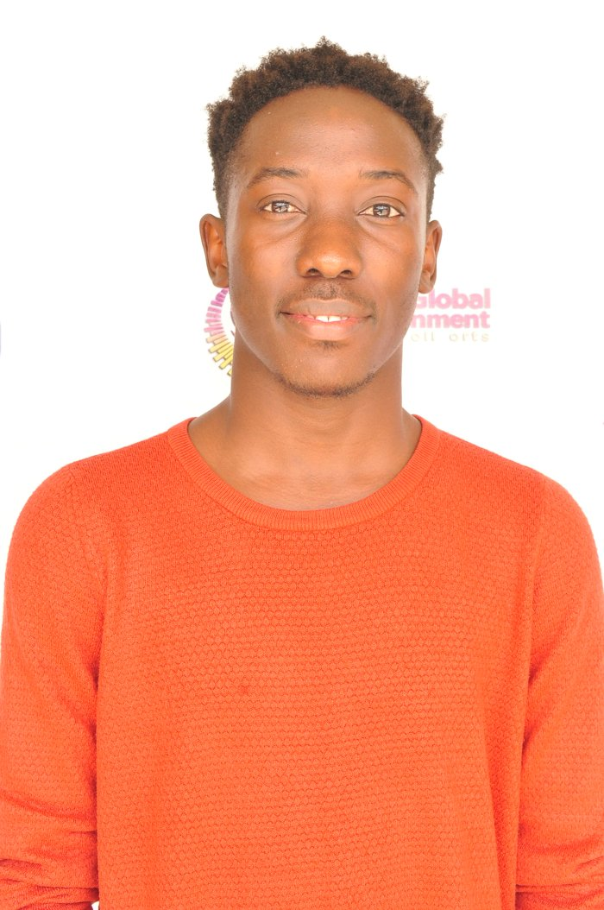

About Me
Who I am
I am Maurice Phiri, a Computer Science student who is passionate about technology that solves real problems. I enjoy building web applications, from design to deployment, and I work well in teams.
Before university I completed Levels 4 to 6 of the
ABMA Diploma in Computer Engineering at Lilongwe Technical
College.
I also worked as a graphic designer, which shapes how
I think about interfaces.
Based in Malawi
Educational Background
| Institution | Qualification | Programme | Period |
|---|---|---|---|
| DMI-St John the Baptist University | Bachelor of Science (in progress) | Computer Science | Currently studying |
| Lilongwe Technical College | ABMA Diploma, Level 6 | Computer Engineering | Feb 2025 |
| Lilongwe Technical College | ABMA Diploma, Level 5 | Computer Engineering | Aug 2024 |
| Lilongwe Technical College | ABMA Diploma, Level 4 | Computer Engineering | Feb 2024 |
Technical Skills
- HTML5 and CSS
- JavaScript
- Python
- Kotlin (Android development)
- Graphic design
- Project management
Experience
Graphic Designer, Image Printing Works, Lilongwe (Aug 2025 to Jan 2026). I created colour-accurate designs for corporate clients and tested them for quality.
Interests and Hobbies
Outside class I enjoy photography and creative design, exploring new software tools and learning how privacy and security work online.
Career Aspirations
I want to become a software engineer who builds technology that serves communities, such as health tools that work without internet access. My goals:
- Finish my BSc in Computer Science.
- Gain professional experience through an internship.
- Deepen my skills in AI and cybersecurity.
- Build and release software that helps people in Malawi.
Contact Information
Email:
mauricephiri483@gmail.com
Phone: +265 994 636 915
GitHub:
github.com/Notmyname-sudo